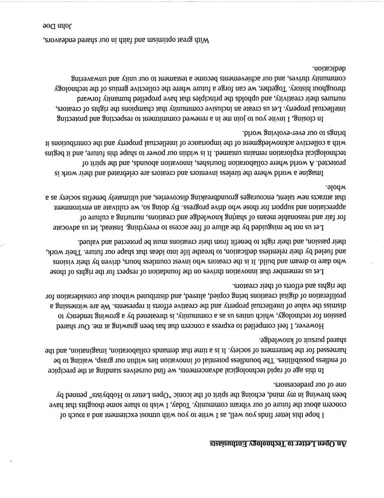
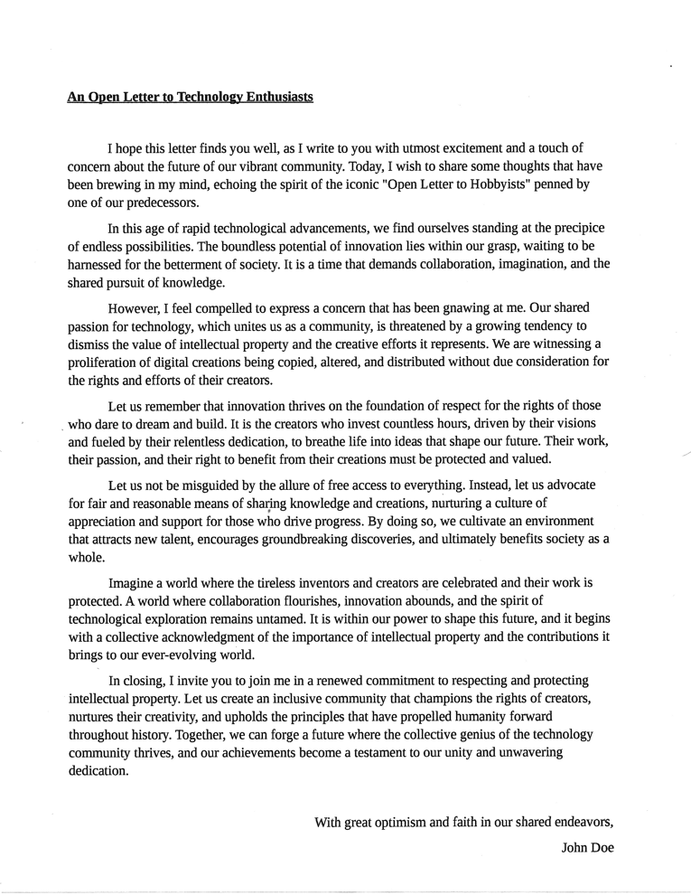
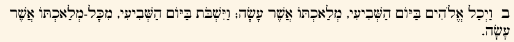

<!DOCTYPE html>


<html lang="en" >

  <head>
    <meta charset="utf-8" />
    <meta name="viewport" content="width=device-width, initial-scale=1.0" /><meta name="generator" content="Docutils 0.17.1: http://docutils.sourceforge.net/" />

    <title>Pytesseract Orientation and Script Detection (OSD) Example &#8212; Document Understanding eBook</title>
  
  
  
  <script data-cfasync="false">
    document.documentElement.dataset.mode = localStorage.getItem("mode") || "";
    document.documentElement.dataset.theme = localStorage.getItem("theme") || "light";
  </script>
  
  <!-- Loaded before other Sphinx assets -->
  <link href="../../../../../_static/styles/theme.css?digest=e353d410970836974a52" rel="stylesheet" />
<link href="../../../../../_static/styles/bootstrap.css?digest=e353d410970836974a52" rel="stylesheet" />
<link href="../../../../../_static/styles/pydata-sphinx-theme.css?digest=e353d410970836974a52" rel="stylesheet" />

  
  <link href="../../../../../_static/vendor/fontawesome/6.1.2/css/all.min.css?digest=e353d410970836974a52" rel="stylesheet" />
  <link rel="preload" as="font" type="font/woff2" crossorigin href="../../../../../_static/vendor/fontawesome/6.1.2/webfonts/fa-solid-900.woff2" />
<link rel="preload" as="font" type="font/woff2" crossorigin href="../../../../../_static/vendor/fontawesome/6.1.2/webfonts/fa-brands-400.woff2" />
<link rel="preload" as="font" type="font/woff2" crossorigin href="../../../../../_static/vendor/fontawesome/6.1.2/webfonts/fa-regular-400.woff2" />

    <link rel="stylesheet" type="text/css" href="../../../../../_static/pygments.css" />
    <link rel="stylesheet" href="../../../../../_static/styles/sphinx-book-theme.css?digest=14f4ca6b54d191a8c7657f6c759bf11a5fb86285" type="text/css" />
    <link rel="stylesheet" type="text/css" href="../../../../../_static/togglebutton.css" />
    <link rel="stylesheet" type="text/css" href="../../../../../_static/copybutton.css" />
    <link rel="stylesheet" type="text/css" href="../../../../../_static/mystnb.4510f1fc1dee50b3e5859aac5469c37c29e427902b24a333a5f9fcb2f0b3ac41.css" />
    <link rel="stylesheet" type="text/css" href="../../../../../_static/sphinx-thebe.css" />
    <link rel="stylesheet" type="text/css" href="../../../../../_static/design-style.4045f2051d55cab465a707391d5b2007.min.css" />
  
  <!-- Pre-loaded scripts that we'll load fully later -->
  <link rel="preload" as="script" href="../../../../../_static/scripts/bootstrap.js?digest=e353d410970836974a52" />
<link rel="preload" as="script" href="../../../../../_static/scripts/pydata-sphinx-theme.js?digest=e353d410970836974a52" />

    <script data-url_root="../../../../../" id="documentation_options" src="../../../../../_static/documentation_options.js"></script>
    <script src="../../../../../_static/jquery.js"></script>
    <script src="../../../../../_static/underscore.js"></script>
    <script src="../../../../../_static/_sphinx_javascript_frameworks_compat.js"></script>
    <script src="../../../../../_static/doctools.js"></script>
    <script src="../../../../../_static/clipboard.min.js"></script>
    <script src="../../../../../_static/copybutton.js"></script>
    <script src="../../../../../_static/scripts/sphinx-book-theme.js?digest=5a5c038af52cf7bc1a1ec88eea08e6366ee68824"></script>
    <script>let toggleHintShow = 'Click to show';</script>
    <script>let toggleHintHide = 'Click to hide';</script>
    <script>let toggleOpenOnPrint = 'true';</script>
    <script src="../../../../../_static/togglebutton.js"></script>
    <script src="../../../../../_static/mybinder_postfix.js"></script>
    <script>var togglebuttonSelector = '.toggle, .admonition.dropdown';</script>
    <script src="../../../../../_static/design-tabs.js"></script>
    <script>const THEBE_JS_URL = "https://unpkg.com/thebe@0.8.2/lib/index.js"
const thebe_selector = ".thebe,.cell"
const thebe_selector_input = "pre"
const thebe_selector_output = ".output, .cell_output"
</script>
    <script async="async" src="../../../../../_static/sphinx-thebe.js"></script>
    <script>DOCUMENTATION_OPTIONS.pagename = 'binder/document-understanding-ebook/ocr/tesseract/pytesseract/pytesseract_osd_example';</script>
    <link rel="canonical" href="https://horvay.dev/document-understanding-ebook/binder/document-understanding-ebook/ocr/tesseract/pytesseract/pytesseract_osd_example.html" />
    <link rel="shortcut icon" href="../../../../../_static/favicon.ico"/>
    <link rel="index" title="Index" href="../../../../../genindex.html" />
    <link rel="search" title="Search" href="../../../../../search.html" />
    <link rel="next" title="Pytesseract Page Segmentation Modes (PSMs) Example" href="pytesseract_psm_example.html" />
    <link rel="prev" title="Pytesseract Function Parameters" href="pytesseract_function_parameters.html" />
  <meta name="viewport" content="width=device-width, initial-scale=1"/>
  <meta name="docsearch:language" content="en"/>
  </head>
  
  
  <body data-bs-spy="scroll" data-bs-target=".bd-toc-nav" data-offset="180" data-bs-root-margin="0px 0px -60%" data-default-mode="">

  
  
  <a class="skip-link" href="#main-content">Skip to main content</a>
  
  <input type="checkbox"
          class="sidebar-toggle"
          name="__primary"
          id="__primary"/>
  <label class="overlay overlay-primary" for="__primary"></label>
  
  <input type="checkbox"
          class="sidebar-toggle"
          name="__secondary"
          id="__secondary"/>
  <label class="overlay overlay-secondary" for="__secondary"></label>
  
  <div class="search-button__wrapper">
    <div class="search-button__overlay"></div>
    <div class="search-button__search-container">
<form class="bd-search d-flex align-items-center"
      action="../../../../../search.html"
      method="get">
  <i class="fa-solid fa-magnifying-glass"></i>
  <input type="search"
         class="form-control"
         name="q"
         id="search-input"
         placeholder="Search this book..."
         aria-label="Search this book..."
         autocomplete="off"
         autocorrect="off"
         autocapitalize="off"
         spellcheck="false"/>
  <span class="search-button__kbd-shortcut"><kbd class="kbd-shortcut__modifier">Ctrl</kbd>+<kbd>K</kbd></span>
</form></div>
  </div>


  <div class="bd-header-announcement container-fluid bd-header-announcement">
    <div class="bd-header-announcement__content">Please note: this book is in alpha - it is consistently being updated with content for a v1.0.0 release! 🤗</div>
  </div>

  
    <nav class="bd-header navbar navbar-expand-lg bd-navbar">
    </nav>
  
  <div class="bd-container">
    <div class="bd-container__inner bd-page-width">
      
      <div class="bd-sidebar-primary bd-sidebar">
        

  
  <div class="sidebar-header-items sidebar-primary__section">
    
    
    
    
  </div>
  
    <div class="sidebar-primary-items__start sidebar-primary__section">
        <div class="sidebar-primary-item">
  

<a class="navbar-brand logo" href="../../../../../intro.html">
  
  
  
  
    
    
      
    
    
    
    <script>document.write(``);</script>
  
  
</a></div>
        <div class="sidebar-primary-item"><nav class="bd-links" id="bd-docs-nav" aria-label="Main">
    <div class="bd-toc-item navbar-nav active">
        
        <ul class="nav bd-sidenav bd-sidenav__home-link">
            <li class="toctree-l1">
                <a class="reference internal" href="../../../../../intro.html">
                    Introduction
                </a>
            </li>
        </ul>
        <p aria-level="2" class="caption" role="heading"><span class="caption-text">Prerequisites</span></p>
<ul class="nav bd-sidenav">
<li class="toctree-l1 has-children"><a class="reference internal" href="../../../../../understandingdocuments/index.html">Understanding Documents</a><input class="toctree-checkbox" id="toctree-checkbox-1" name="toctree-checkbox-1" type="checkbox"/><label class="toctree-toggle" for="toctree-checkbox-1"><i class="fa-solid fa-chevron-down"></i></label><ul>
<li class="toctree-l2"><a class="reference internal" href="../../../../../documentfileformats/index.html">📂 Document File Formats</a></li>
<li class="toctree-l2"><a class="reference internal" href="../../../../../documentstructures/index.html">🧱 Document Structures</a></li>
</ul>
</li>
</ul>
<p aria-level="2" class="caption" role="heading"><span class="caption-text">Topic Guides</span></p>
<ul class="current nav bd-sidenav">
<li class="toctree-l1 current active has-children"><a class="reference internal" href="../../../../../textextraction/index.html">Text Extraction</a><input checked="" class="toctree-checkbox" id="toctree-checkbox-2" name="toctree-checkbox-2" type="checkbox"/><label class="toctree-toggle" for="toctree-checkbox-2"><i class="fa-solid fa-chevron-down"></i></label><ul class="current">
<li class="toctree-l2 current active has-children"><a class="reference internal" href="../../../../../ocr/index.html">Optical Character Recognition</a><input checked="" class="toctree-checkbox" id="toctree-checkbox-3" name="toctree-checkbox-3" type="checkbox"/><label class="toctree-toggle" for="toctree-checkbox-3"><i class="fa-solid fa-chevron-down"></i></label><ul class="current">
<li class="toctree-l3"><a class="reference internal" href="../../../../../ocr/overview/history.html">📜 History</a></li>
<li class="toctree-l3"><a class="reference internal" href="../../../../../ocr/overview/howitworks.html">🧠 How it Works</a></li>
<li class="toctree-l3 has-children"><a class="reference internal" href="../../../../../ocr/software/index.html">💾 Software</a><input class="toctree-checkbox" id="toctree-checkbox-4" name="toctree-checkbox-4" type="checkbox"/><label class="toctree-toggle" for="toctree-checkbox-4"><i class="fa-solid fa-chevron-down"></i></label><ul>
<li class="toctree-l4"><a class="reference internal" href="../../../../../ocr/software/engines.html">⚙️ Engines</a></li>
<li class="toctree-l4"><a class="reference internal" href="../../../../../ocr/software/packages.html">📦 Packages</a></li>
<li class="toctree-l4"><a class="reference internal" href="../../../../../ocr/software/gui.html">💻 Graphical User Interfaces</a></li>
</ul>
</li>
<li class="toctree-l3 current active has-children"><a class="reference internal" href="../../../../../ocr/notebooks/index.html">📔 Notebooks</a><input checked="" class="toctree-checkbox" id="toctree-checkbox-5" name="toctree-checkbox-5" type="checkbox"/><label class="toctree-toggle" for="toctree-checkbox-5"><i class="fa-solid fa-chevron-down"></i></label><ul class="current">
<li class="toctree-l4"><a class="reference internal" href="pytesseract_basic_example.html">Pytesseract Basic Example</a></li>
<li class="toctree-l4"><a class="reference internal" href="pytesseract_languages_example.html">Pytesseract Languages Example</a></li>
<li class="toctree-l4"><a class="reference internal" href="pytesseract_batch_processing_example.html">Pytesseract Batch Processing Example</a></li>
<li class="toctree-l4"><a class="reference internal" href="pytesseract_output_formats_example.html">Pytesseract Output Formats Example</a></li>
<li class="toctree-l4"><a class="reference internal" href="pytesseract_function_parameters.html">Pytesseract Function Parameters</a></li>
<li class="toctree-l4 current active"><a class="current reference internal" href="#">Pytesseract Orientation and Script Detection (OSD) Example</a></li>
<li class="toctree-l4"><a class="reference internal" href="pytesseract_psm_example.html">Pytesseract Page Segmentation Modes (PSMs) Example</a></li>
</ul>
</li>
<li class="toctree-l3"><a class="reference internal" href="../../../../../ocr/datasets/index.html">🗄️ Datasets</a></li>
<li class="toctree-l3"><a class="reference internal" href="../../../../../ocr/papers/index.html">📑 Papers</a></li>
<li class="toctree-l3"><a class="reference internal" href="../../../../../ocr/benchmarks/index.html">📊 Benchmarks</a></li>
<li class="toctree-l3"><a class="reference internal" href="../../../../../ocr/resources/index.html">🗃️ Resources</a></li>
</ul>
</li>
</ul>
</li>
<li class="toctree-l1"><a class="reference internal" href="../../../../../bibliography/index.html">Bibliography</a></li>
</ul>

    </div>
</nav></div>
    </div>
  
  
  <div class="sidebar-primary-items__end sidebar-primary__section">
  </div>
  
  <div id="rtd-footer-container"></div>


      </div>
      
      <main id="main-content" class="bd-main">
        
        

<div class="sbt-scroll-pixel-helper"></div>

          <div class="bd-content">
            <div class="bd-article-container">
              
              <div class="bd-header-article">
<div class="header-article-items header-article__inner">
  
    <div class="header-article-items__start">
      
        <div class="header-article-item"><label class="sidebar-toggle primary-toggle btn btn-sm" for="__primary" title="Toggle primary sidebar" data-bs-placement="bottom" data-bs-toggle="tooltip">
  <span class="fa-solid fa-bars"></span>
</label></div>
      
    </div>
  
  
    <div class="header-article-items__end">
      
        <div class="header-article-item">

<div class="article-header-buttons">


<div class="dropdown dropdown-launch-buttons">
  <button class="btn dropdown-toggle" type="button" data-bs-toggle="dropdown" aria-expanded="false" aria-label="Launch interactive content">
    <i class="fas fa-rocket"></i>
  </button>
  <ul class="dropdown-menu">
      
      
      
      <li><a href="https://mybinder.org/v2/gh/dhorvay/document-understanding-ebook/master?urlpath=tree/binder/document-understanding-ebook/ocr/tesseract/pytesseract/pytesseract_osd_example.ipynb" target="_blank"
   class="btn btn-sm dropdown-item"
   title="Launch onBinder"
   data-bs-placement="left" data-bs-toggle="tooltip"
>
  

<span class="btn__icon-container">
  
    
  </span>
<span class="btn__text-container">Binder</span>
</a>
</li>
      
      
      
      
      <li><a href="https://colab.research.google.com/github/dhorvay/document-understanding-ebook/blob/master/binder/document-understanding-ebook/ocr/tesseract/pytesseract/pytesseract_osd_example.ipynb" target="_blank"
   class="btn btn-sm dropdown-item"
   title="Launch onColab"
   data-bs-placement="left" data-bs-toggle="tooltip"
>
  

<span class="btn__icon-container">
  
    
  </span>
<span class="btn__text-container">Colab</span>
</a>
</li>
      
  </ul>
</div>


<div class="dropdown dropdown-source-buttons">
  <button class="btn dropdown-toggle" type="button" data-bs-toggle="dropdown" aria-expanded="false" aria-label="Source repositories">
    <i class="fab fa-github"></i>
  </button>
  <ul class="dropdown-menu">
      
      
      
      <li><a href="https://github.com/dhorvay/document-understanding-ebook" target="_blank"
   class="btn btn-sm btn-source-repository-button dropdown-item"
   title="Source repository"
   data-bs-placement="left" data-bs-toggle="tooltip"
>
  

<span class="btn__icon-container">
  <i class="fab fa-github"></i>
  </span>
<span class="btn__text-container">Repository</span>
</a>
</li>
      
      
      
      
      <li><a href="https://github.com/dhorvay/document-understanding-ebook/issues/new?title=Issue%20on%20page%20%2Fbinder/document-understanding-ebook/ocr/tesseract/pytesseract/pytesseract_osd_example.html&body=Your%20issue%20content%20here." target="_blank"
   class="btn btn-sm btn-source-issues-button dropdown-item"
   title="Open an issue"
   data-bs-placement="left" data-bs-toggle="tooltip"
>
  

<span class="btn__icon-container">
  <i class="fas fa-lightbulb"></i>
  </span>
<span class="btn__text-container">Open issue</span>
</a>
</li>
      
  </ul>
</div>


<div class="dropdown dropdown-download-buttons">
  <button class="btn dropdown-toggle" type="button" data-bs-toggle="dropdown" aria-expanded="false" aria-label="Download this page">
    <i class="fas fa-download"></i>
  </button>
  <ul class="dropdown-menu">
      
      
      
      <li><a href="../../../../../_sources/binder/document-understanding-ebook/ocr/tesseract/pytesseract/pytesseract_osd_example.ipynb" target="_blank"
   class="btn btn-sm btn-download-source-button dropdown-item"
   title="Download source file"
   data-bs-placement="left" data-bs-toggle="tooltip"
>
  

<span class="btn__icon-container">
  <i class="fas fa-file"></i>
  </span>
<span class="btn__text-container">.ipynb</span>
</a>
</li>
      
      
      
      
      <li>
<button onclick="window.print()"
  class="btn btn-sm btn-download-pdf-button dropdown-item"
  title="Print to PDF"
  data-bs-placement="left" data-bs-toggle="tooltip"
>
  

<span class="btn__icon-container">
  <i class="fas fa-file-pdf"></i>
  </span>
<span class="btn__text-container">.pdf</span>
</button>
</li>
      
  </ul>
</div>


<button onclick="toggleFullScreen()"
  class="btn btn-sm btn-fullscreen-button"
  title="Fullscreen mode"
  data-bs-placement="bottom" data-bs-toggle="tooltip"
>
  

<span class="btn__icon-container">
  <i class="fas fa-expand"></i>
  </span>

</button>


<script>
document.write(`
  <button class="theme-switch-button btn btn-sm btn-outline-primary navbar-btn rounded-circle" title="light/dark" aria-label="light/dark" data-bs-placement="bottom" data-bs-toggle="tooltip">
    <span class="theme-switch" data-mode="light"><i class="fa-solid fa-sun"></i></span>
    <span class="theme-switch" data-mode="dark"><i class="fa-solid fa-moon"></i></span>
    <span class="theme-switch" data-mode="auto"><i class="fa-solid fa-circle-half-stroke"></i></span>
  </button>
`);
</script>

<script>
document.write(`
  <button class="btn btn-sm navbar-btn search-button search-button__button" title="Search" aria-label="Search" data-bs-placement="bottom" data-bs-toggle="tooltip">
    <i class="fa-solid fa-magnifying-glass"></i>
  </button>
`);
</script>
<label class="sidebar-toggle secondary-toggle btn btn-sm" for="__secondary"title="Toggle secondary sidebar" data-bs-placement="bottom" data-bs-toggle="tooltip">
    <span class="fa-solid fa-list"></span>
</label>
</div></div>
      
    </div>
  
</div>
</div>
              
              

<div id="jb-print-docs-body" class="onlyprint">
    <h1>Pytesseract Orientation and Script Detection (OSD) Example</h1>
    <!-- Table of contents -->
    <div id="print-main-content">
        <div id="jb-print-toc">
            
            <div>
                <h2> Contents </h2>
            </div>
            <nav aria-label="Page">
                <ul class="visible nav section-nav flex-column">
<li class="toc-h2 nav-item toc-entry"><a class="reference internal nav-link" href="#image-rotation">Image Rotation</a></li>
<li class="toc-h2 nav-item toc-entry"><a class="reference internal nav-link" href="#orientation-and-script-detection-osd">Orientation and Script Detection (OSD)</a></li>
<li class="toc-h2 nav-item toc-entry"><a class="reference internal nav-link" href="#correcting-the-rotation">Correcting the rotation</a></li>
<li class="toc-h2 nav-item toc-entry"><a class="reference internal nav-link" href="#use-case-for-script-detection">Use case for Script Detection</a></li>
</ul>
            </nav>
        </div>
    </div>
</div>

              
                
<div id="searchbox"></div>
                <article class="bd-article" role="main">
                  
  <section class="tex2jax_ignore mathjax_ignore" id="pytesseract-orientation-and-script-detection-osd-example">
<h1>Pytesseract Orientation and Script Detection (OSD) Example<a class="headerlink" href="#pytesseract-orientation-and-script-detection-osd-example" title="Permalink to this heading">#</a></h1>
<p>This example shows how to use the orientation and script detection (OSD) functions in pytesseract.</p>
<p>OSD, plainly, describes the detection of the orientation of the input image and apparent script (alphabet). This information is extremely useful when you want to improve accuracy with Tesseract/pytesseract, which will be demonstrated in the examples below.</p>
<div class="cell docutils container">
<div class="cell_input docutils container">
<div class="highlight-ipython3 notranslate"><div class="highlight"><pre><span></span><span class="kn">from</span> <span class="nn">PIL</span> <span class="kn">import</span> <span class="n">Image</span>
<span class="kn">import</span> <span class="nn">pytesseract</span>
</pre></div>
</div>
</div>
</div>
<section id="image-rotation">
<h2>Image Rotation<a class="headerlink" href="#image-rotation" title="Permalink to this heading">#</a></h2>
<p>If the input image is rotated, then Tesseract will by default give bad results. Tesseract by default, does not apply any preprocessing to rotate images - it is up to the end-user to rotate before processing.</p>
<div class="cell docutils container">
<div class="cell_input docutils container">
<div class="highlight-ipython3 notranslate"><div class="highlight"><pre><span></span><span class="n">path</span> <span class="o">=</span> <span class="s1">&#39;../../../../binder-datasets/ocr/images/letter_rotated.jpg&#39;</span>
<span class="n">im</span> <span class="o">=</span> <span class="n">Image</span><span class="o">.</span><span class="n">open</span><span class="p">(</span><span class="n">path</span><span class="p">)</span>
<span class="n">display</span><span class="p">(</span><span class="n">im</span><span class="o">.</span><span class="n">resize</span><span class="p">(</span><span class="nb">int</span><span class="p">(</span><span class="mf">0.3</span><span class="o">*</span><span class="n">s</span><span class="p">)</span> <span class="k">for</span> <span class="n">s</span> <span class="ow">in</span> <span class="n">im</span><span class="o">.</span><span class="n">size</span><span class="p">))</span>
</pre></div>
</div>
</div>
<div class="cell_output docutils container">

</div>
</div>
<p>Let’s see the results as-is.</p>
<div class="cell docutils container">
<div class="cell_input docutils container">
<div class="highlight-ipython3 notranslate"><div class="highlight"><pre><span></span><span class="nb">print</span><span class="p">(</span><span class="n">pytesseract</span><span class="o">.</span><span class="n">image_to_string</span><span class="p">(</span><span class="n">im</span><span class="p">))</span>
</pre></div>
</div>
</div>
<div class="cell_output docutils container">
<div class="output stream highlight-myst-ansi notranslate"><div class="highlight"><pre><span></span>a0q uyor

‘sIOARapUs pareys INO Ul yey pue wistumdo years WIM

“WOTRDIpap
SULIdARMUN pue AIIUN IMO 0} JUSUTe}Sa} B aUIOIAG SJUBWIBATTYIe MO pue ‘saaty) ATUNUIUIOD
AZoTouya} sup Jo sntuas BANaT[Od ay} aayM aININJ e 9810] UD aM “TayIasOL, ALO}sTY Noysnop
premio} Auewmy petjedoid aaey yew) sopdioutid ay) sproydn pue ‘AtAyeaso ey) saminu
‘s10}ea19 JO SUSU ayy suotdureyo yey) ATUNUIUIOD BATSNPUT Ue a}eaID sn jay ‘Ayadod [enDaTjaIut
sundaloid pue 8undadsai 0} JUBUNTUIWIOD paMmaual e UT aut uTOf 0} NOA aHAUT | “BUTSOTD UT

‘PLIOM SUTATOAS-~IaAa INO 0} SBULIQ
}f SUOTMNGLNUOD au) pue Ayadord JempdaTjaIUT Jo aUEIOdUTT ay} Jo WAWISpay|MOUye aATOaTIOD &amp; YIM
suIgaq I pue ‘amyny sip adeys 0} JaMmod IMO UTYIIM ST I] ‘pauiejuN suTeUeI UOMeIOTAxe [eoTso;oUTya)
Jo Ids at pue ‘spunoge UOTRAOUUT ‘SaysLMOT] WONeIOGeT[OD a1ayM PLOM VY ‘peye101d

SI YIOM ITay}] PU PaleIqaTad are s1O}ea1D PUL SIOJUIAUT SSafaIN af} aoyM P]JOM e sUTSeUIT

‘ajoum
e se AjaIN0s s}ljauiaq ATAIEUIN[N pue ‘saLaAooSIp SUTYeIIQpUNOIS sasemMooua “UeTe} Mau see yey
JUSUIUOITAUA Ue aJeANTND am ‘os Surop Ag ‘ssaigoid aAUp OYM asoy} 10J Woddns pue uoneesdde
jo aimyno e ZULU ‘suoNealD pue aspayMouy SuLIeys Jo sueduI a_qeuoseal Pur Ie} 10J

JILOOAPE SN Jay ‘PeaIsuy “SuTtpPAIaAa 0} sSad0e aay Jo ainqye ay) Aq paprnSstut aq ou sn ja‘T

‘panyea pue pa}deloid aq IsNUI sUONeaD May) Wo Wauaq 0} IWS say) pue ‘UoTssed ITey)
‘YIOM May], ‘aiMNy Mo adeys Jey seap! OUT afi] aypearq 0} ‘UONeIIpap ssapueTer ay} Aq payany pue
SUOISTA Jtay) Aq USALIp ‘SINOY SsapUNOd ISBAUT OYM S10}eI1D JY ST II “pfinq pue weap 0} alep OYM *
asoy} JO SIYSII ay Joj JOadsai Jo UONepUNO] ay} UO SBATIU) VOPAOUUT Jey} JaqUIBUIal SN 39&#39;T

‘s10}919 SY) JO sUojja pue syst sy}

JO] UONeIapIsuod anp NOTPIM painqunsip pue ‘paale ‘patdod Sureq suopea [eNsIp Jo uonesajtoid

eB SUISSAUIIM are am ‘S]Uasatdal II SIIO}Ja aaNeaID ay) pue AVadoid [en daTJaIUl Jo anjeA aU) SSTWISIp

0) Aouapus) ZuIMOIZ eB Aq patiayeartp st ‘AVTUNUTUIOD e se sn sa}TUN YDTYM ‘AZofouyd~a} 10j uotssed
paseys ING ‘aul je BULMeUS Udaq Sey Jey} WisdUOD e ssaidxa 0} pa[eduiod Jae] | ‘TaAaMOH

‘a8payMouy jo ymsind pareys

al) pue ‘UOTeUTSeUIT ‘UONeIOgeT[OD SpUeUIap Jey} SUIT) e ST I] “AJa{DOS JO JUAULIaNaq al) 10} pessaurey

aq 0) Suntem ‘dser8 no uTWIM sal] WoNeAOUUT Jo [enuaIOd ssaypunog ay], ‘santpiqissod ssaypua jo
aordiaid ay} 3e BUIPUEs SBATaSINO PUL] 9M ‘s}UaWIBOUeApe [edTZO[OUYIa} prides Jo ase stp UT

‘sIossadapaid mo jo auo

Aq pauuad ,,sisthqqox 0} Jana] uad¢,, dtuodt ay} Jo Wards ay) Suroyse ‘puru Aw UT SULMaIq Ueaq

JARY EY) SIYSNOUP at1os areys 0} YSTM | ‘AepoO], ‘AWUNUIWIOD JURIQIA MO JO aInyNy ay} noge Wrau0d
JO YONO} &amp; PUR JUSTIa}1OXa JSOUNIN YIM NOL 0} aM | se ‘Tam NOA spuly Jane] sty adoy J

SISEISHIUy AsO[OUl al, 0} Jojlo |] UedQ uy

</pre></div>
</div>
</div>
</div>
<p>The text is completely inaccurate. You can see what Tesseract was trying to do, read it top-to-bottom and extract the text.</p>
</section>
<section id="orientation-and-script-detection-osd">
<h2>Orientation and Script Detection (OSD)<a class="headerlink" href="#orientation-and-script-detection-osd" title="Permalink to this heading">#</a></h2>
<p>OSD can help us here by providing necessary information to fix not only the rotation issue, but it also provides addition information such as the script language.</p>
<p>We can get OSD information with pytesseract by using <code class="docutils literal notranslate"><span class="pre">image_to_osd</span></code>.</p>
<p>It provides this information:</p>
<ul class="simple">
<li><p><strong>page_num</strong> the page index of the current item</p></li>
<li><p><strong>orientation</strong> the detected rotation of the image</p></li>
<li><p><strong>rotate</strong> the <em>required</em> rotation angle to get the text in a horizontal format</p></li>
<li><p><strong>orientation_conf</strong> the confience of Tesseract that the orientation was detected correctly - higher is better</p></li>
<li><p><strong>script</strong>  provides information about the language or script family to which the detected text belongs</p></li>
<li><p><strong>script_conf</strong> the confience of Tesseract that the script was detected correctly - higher is better</p></li>
</ul>
<p><a class="reference external" href="https://tesseract-ocr.github.io/tessapi/5.x/a02438.html#aca4e9a0d9cf388510168d9b58864d1e5">According to the official documentation</a> a score of confience score 15.0 is ‘reasonably confident’ for orientation and script detection.</p>
<p>It is very helpful to use the <code class="docutils literal notranslate"><span class="pre">output_type</span></code> of <code class="docutils literal notranslate"><span class="pre">dict</span></code>, so we can easily access the values with the given keys.</p>
<div class="cell docutils container">
<div class="cell_input docutils container">
<div class="highlight-ipython3 notranslate"><div class="highlight"><pre><span></span><span class="n">osd</span> <span class="o">=</span> <span class="n">pytesseract</span><span class="o">.</span><span class="n">image_to_osd</span><span class="p">(</span><span class="n">im</span><span class="p">,</span> <span class="n">output_type</span><span class="o">=</span><span class="s1">&#39;dict&#39;</span><span class="p">)</span>
<span class="nb">print</span><span class="p">(</span><span class="n">osd</span><span class="p">)</span>
</pre></div>
</div>
</div>
<div class="cell_output docutils container">
<div class="output stream highlight-myst-ansi notranslate"><div class="highlight"><pre><span></span>{&#39;page_num&#39;: 0, &#39;orientation&#39;: 180, &#39;rotate&#39;: 180, &#39;orientation_conf&#39;: 20.69, &#39;script&#39;: &#39;Latin&#39;, &#39;script_conf&#39;: 33.33}
</pre></div>
</div>
</div>
</div>
</section>
<section id="correcting-the-rotation">
<h2>Correcting the rotation<a class="headerlink" href="#correcting-the-rotation" title="Permalink to this heading">#</a></h2>
<p>Let’s correct the rotation. It is easy using <code class="docutils literal notranslate"><span class="pre">Pillow</span></code>.</p>
<div class="cell docutils container">
<div class="cell_input docutils container">
<div class="highlight-ipython3 notranslate"><div class="highlight"><pre><span></span><span class="n">rotate</span> <span class="o">=</span> <span class="n">osd</span><span class="p">[</span><span class="s1">&#39;rotate&#39;</span><span class="p">]</span>
<span class="n">im_fixed</span> <span class="o">=</span> <span class="n">im</span><span class="o">.</span><span class="n">copy</span><span class="p">()</span><span class="o">.</span><span class="n">rotate</span><span class="p">(</span><span class="n">rotate</span><span class="p">)</span>
<span class="n">display</span><span class="p">(</span><span class="n">im_fixed</span><span class="o">.</span><span class="n">resize</span><span class="p">(</span><span class="nb">int</span><span class="p">(</span><span class="mf">0.3</span><span class="o">*</span><span class="n">s</span><span class="p">)</span> <span class="k">for</span> <span class="n">s</span> <span class="ow">in</span> <span class="n">im_fixed</span><span class="o">.</span><span class="n">size</span><span class="p">))</span>
<span class="nb">print</span><span class="p">(</span><span class="n">pytesseract</span><span class="o">.</span><span class="n">image_to_string</span><span class="p">(</span><span class="n">im_fixed</span><span class="p">))</span>
</pre></div>
</div>
</div>
<div class="cell_output docutils container">

<div class="output stream highlight-myst-ansi notranslate"><div class="highlight"><pre><span></span>An Open Letter to Technology Enthusiasts

I hope this letter finds you well, as I write to you with utmost excitement and a touch of
concern about the future of our vibrant community. Today, I wish to share some thoughts that have
been brewing in my mind, echoing the spirit of the iconic &quot;Open Letter to Hobbyists&quot; penned by
one of our predecessors.

In this age of rapid technological advancements, we find ourselves standing at the precipice
of endless possibilities. The boundless potential of innovation lies within our grasp, waiting to be
harnessed for the betterment of society. It is a time that demands collaboration, imagination, and the
shared pursuit of knowledge.

However, I feel compelled to express a concern that has been gnawing at me. Our shared
passion for technology, which unites us as a community, is threatened by a growing tendency to
dismiss the value of intellectual property and the creative efforts it represents. We are witnessing a
proliferation of digital creations being copied, altered, and distributed without due consideration for
the rights and efforts of their creators.

Let us remember that innovation thrives on the foundation of respect for the rights of those
_who dare to dream and build. It is the creators who invest countless hours, driven by their visions
and fueled by their relentless dedication, to breathe life into ideas that shape our future. Their work,
their passion, and their right to benefit from their creations must be protected and valued.

Let us not be misguided by the allure of free access to everything. Instead, let us advocate
for fair and reasonable means of sharing knowledge and creations, nurturing a culture of
appreciation and support for those who drive progress. By doing so, we cultivate an environment
that attracts new talent, encourages groundbreaking discoveries, and ultimately benefits society as a
whole.

Imagine a world where the tireless inventors and creators are celebrated and their work is
protected. A world where collaboration flourishes, innovation abounds, and the spirit of
technological exploration remains untamed. It is within our power to shape this future, and it begins
with a collective acknowledgment of the importance of intellectual property and the contributions it
brings to our ever-evolving world.

In closing, I invite you to join me in a renewed commitment to respecting and protecting
intellectual property. Let us create an inclusive community that champions the rights of creators,
nurtures their creativity, and upholds the principles that have propelled humanity forward
throughout history. Together, we can forge a future where the collective genius of the technology
community thrives, and our achievements become a testament to our unity and unwavering
dedication.

With great optimism and faith in our shared endeavors,

John Doe

</pre></div>
</div>
</div>
</div>
</section>
<section id="use-case-for-script-detection">
<h2>Use case for Script Detection<a class="headerlink" href="#use-case-for-script-detection" title="Permalink to this heading">#</a></h2>
<p>Where does script detection come into play? Here’s one potential example: what if you are creating a global OCR API? In this case you may not know the language or script of the input image.</p>
<p>In this example, I have a image in the Hebrew language. I can extract text from this image with out knowing it is Hebrew in advance by utilizing the script trained data that comes with <code class="docutils literal notranslate"><span class="pre">tessdata_fast</span></code>.</p>
<div class="cell docutils container">
<div class="cell_input docutils container">
<div class="highlight-ipython3 notranslate"><div class="highlight"><pre><span></span><span class="n">path</span> <span class="o">=</span> <span class="s1">&#39;../../../../binder-datasets/ocr/images/hebrew_text.png&#39;</span>
<span class="n">im</span> <span class="o">=</span> <span class="n">Image</span><span class="o">.</span><span class="n">open</span><span class="p">(</span><span class="n">path</span><span class="p">)</span>
<span class="n">display</span><span class="p">(</span><span class="n">im</span><span class="p">)</span>
</pre></div>
</div>
</div>
<div class="cell_output docutils container">

</div>
</div>
<div class="cell docutils container">
<div class="cell_input docutils container">
<div class="highlight-ipython3 notranslate"><div class="highlight"><pre><span></span><span class="n">osd</span> <span class="o">=</span> <span class="n">pytesseract</span><span class="o">.</span><span class="n">image_to_osd</span><span class="p">(</span><span class="n">im</span><span class="p">,</span> <span class="n">output_type</span><span class="o">=</span><span class="s1">&#39;dict&#39;</span><span class="p">)</span>
<span class="nb">print</span><span class="p">(</span><span class="n">osd</span><span class="p">)</span>
</pre></div>
</div>
</div>
<div class="cell_output docutils container">
<div class="output stream highlight-myst-ansi notranslate"><div class="highlight"><pre><span></span>{&#39;page_num&#39;: 0, &#39;orientation&#39;: 0, &#39;rotate&#39;: 0, &#39;orientation_conf&#39;: 6.11, &#39;script&#39;: &#39;Hebrew&#39;, &#39;script_conf&#39;: 90.0}
</pre></div>
</div>
</div>
</div>
<div class="cell docutils container">
<div class="cell_input docutils container">
<div class="highlight-ipython3 notranslate"><div class="highlight"><pre><span></span><span class="nb">print</span><span class="p">(</span><span class="n">pytesseract</span><span class="o">.</span><span class="n">image_to_string</span><span class="p">(</span><span class="n">im</span><span class="p">,</span> <span class="n">lang</span><span class="o">=</span><span class="s1">&#39;script/&#39;</span><span class="o">+</span><span class="n">osd</span><span class="p">[</span><span class="s1">&#39;script&#39;</span><span class="p">],</span> <span class="n">config</span><span class="o">=</span><span class="s1">&#39;--psm 6&#39;</span><span class="p">))</span>
</pre></div>
</div>
</div>
<div class="cell_output docutils container">
<div class="output stream highlight-myst-ansi notranslate"><div class="highlight"><pre><span></span>ב וכל אֲלֹהִים בַּיוֹם הַשְׁבֵיעי. מְלֵאכְתּוֹ אֲשֶׁר עֲשֶׂה; ויִשְׁבּת בַּיוֹם הַשְׁבֵיעי. מכָּל-מְלָאכְתּוֹ אֲשֶׁר
עֲשֶׂה.

</pre></div>
</div>
</div>
</div>
<p>This is not perfect. There are two potential issues with this.</p>
<ol class="arabic simple">
<li><p>Some languages have the same script type. As an example, English, Spanish, and French all are classified as ‘Latin’.</p></li>
<li><p>The script type returned by <code class="docutils literal notranslate"><span class="pre">image_to_osd</span></code> is not a one-to-one mapping. As an example for Chinese Simple and Chinese Traditional the output might be ‘Han’
but if you examine the <code class="docutils literal notranslate"><span class="pre">tessdata</span></code> scripts, you will find ‘HanS’, ‘HanS_vert’, ‘HanT’, and ‘HanT_vert’.</p></li>
</ol>
<p>For the first issue a resolution could be to extract the text via the ‘Latin’ script, then use a separate Python library, such as <a class="reference external" href="https://github.com/Mimino666/langdetect">langdetect</a>,
to get the best language match. Then you would could OCR again with the detected language for more accurate results.</p>
<p>For the second issue you may need to use a variety of methods to make an educated guess.</p>
</section>
</section>

    <script type="text/x-thebe-config">
    {
        requestKernel: true,
        binderOptions: {
            repo: "binder-examples/jupyter-stacks-datascience",
            ref: "master",
        },
        codeMirrorConfig: {
            theme: "abcdef",
            mode: "python"
        },
        kernelOptions: {
            name: "python3",
            path: "./binder/document-understanding-ebook/ocr/tesseract/pytesseract"
        },
        predefinedOutput: true
    }
    </script>
    <script>kernelName = 'python3'</script>

                </article>
              

              
              
                <footer class="bd-footer-article">
                  
<div class="footer-article-items footer-article__inner">
  
    <div class="footer-article-item"><!-- Previous / next buttons -->
<div class="prev-next-area">
    <a class="left-prev"
       href="pytesseract_function_parameters.html"
       title="previous page">
      <i class="fa-solid fa-angle-left"></i>
      <div class="prev-next-info">
        <p class="prev-next-subtitle">previous</p>
        <p class="prev-next-title">Pytesseract Function Parameters</p>
      </div>
    </a>
    <a class="right-next"
       href="pytesseract_psm_example.html"
       title="next page">
      <div class="prev-next-info">
        <p class="prev-next-subtitle">next</p>
        <p class="prev-next-title">Pytesseract Page Segmentation Modes (PSMs) Example</p>
      </div>
      <i class="fa-solid fa-angle-right"></i>
    </a>
</div></div>
  
</div>

                </footer>
              
            </div>
            
            
              
                <div class="bd-sidebar-secondary bd-toc"><div class="sidebar-secondary-items sidebar-secondary__inner">

  <div class="sidebar-secondary-item">
  <div class="page-toc tocsection onthispage">
    <i class="fa-solid fa-list"></i> Contents
  </div>
  <nav class="bd-toc-nav page-toc">
    <ul class="visible nav section-nav flex-column">
<li class="toc-h2 nav-item toc-entry"><a class="reference internal nav-link" href="#image-rotation">Image Rotation</a></li>
<li class="toc-h2 nav-item toc-entry"><a class="reference internal nav-link" href="#orientation-and-script-detection-osd">Orientation and Script Detection (OSD)</a></li>
<li class="toc-h2 nav-item toc-entry"><a class="reference internal nav-link" href="#correcting-the-rotation">Correcting the rotation</a></li>
<li class="toc-h2 nav-item toc-entry"><a class="reference internal nav-link" href="#use-case-for-script-detection">Use case for Script Detection</a></li>
</ul>
  </nav></div>

</div></div>
              
            
          </div>
          <footer class="bd-footer-content">
            
<div class="bd-footer-content__inner container">
  
  <div class="footer-item">
    
<p class="component-author">
By Devin Horvay
</p>

  </div>
  
  <div class="footer-item">
    
  <p class="copyright">
    
      © Copyright 2023.
      <br/>
    
  </p>

  </div>
  
  <div class="footer-item">
    
  </div>
  
  <div class="footer-item">
    
<div class="extra_footer">
  All of the material in this book is publicly available under <a href="https://github.com/dhorvay/document-understanding-ebook/blob/main/LICENSE">open source licenses.</a>

</div>
  </div>
  
</div>
          </footer>
        

      </main>
    </div>
  </div>
  
  <!-- Scripts loaded after <body> so the DOM is not blocked -->
  <script src="../../../../../_static/scripts/bootstrap.js?digest=e353d410970836974a52"></script>
<script src="../../../../../_static/scripts/pydata-sphinx-theme.js?digest=e353d410970836974a52"></script>

  <footer class="bd-footer">
  </footer>
  </body>
</html>